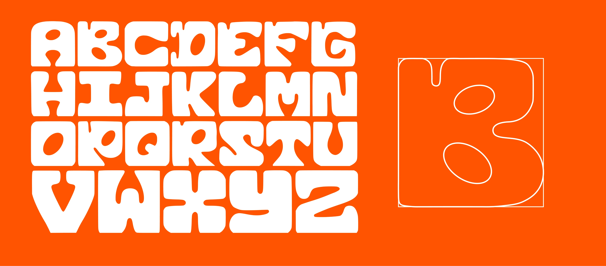
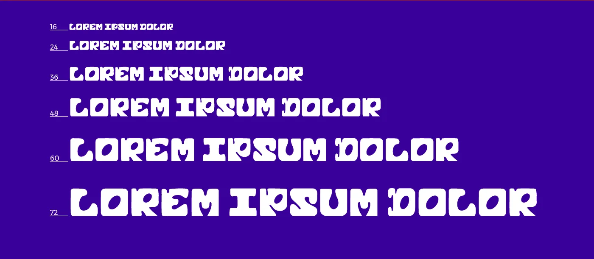
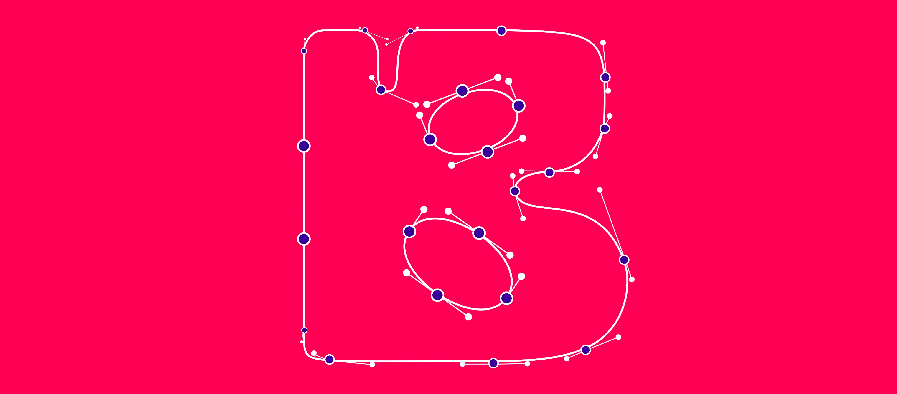
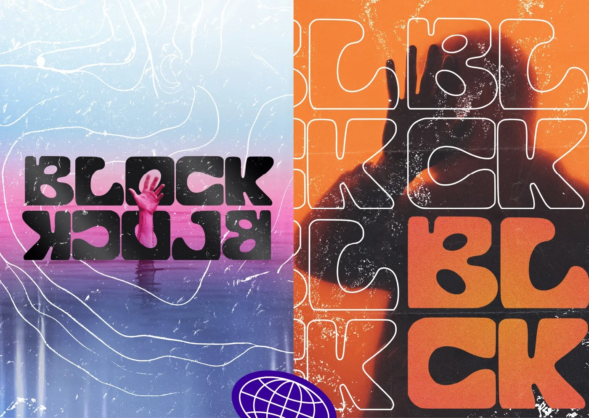
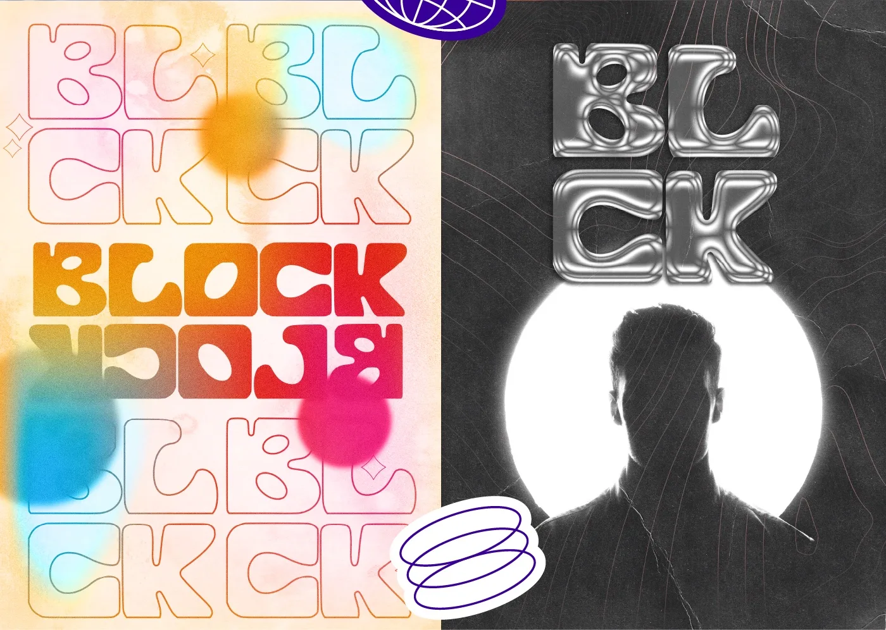

- 2023
- Illustrator, Photoshop





@letsketches @letsketches@letsketches@letsketches@letsketches@letsketches@letsketches@letsketches@letsketches@letsketches
@letsketches@letsketches@letsketches@letsketches@letsketches@letsketches@letsketches@letsketches@letsketches@letsketches
@letsketches@letsketches@letsketches@letsketches@letsketches@letsketches@letsketches@letsketches@letsketches
@letsketches@letsketches@letsketches@letsketches@letsketches@letsketches@letsketches@letsketches@letsketches@letsketches